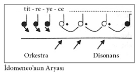

Girit Kralı İdomeneo (1781)
Truva Savaşı bitmiştir. Girit halkı uzun zamandır kraliyet donanmasının geri dönüşünü bekler. Kydonia limanında toplanan binlerce kişi gözlerini ufka dikmiştir. Denizde korkunç bir fırtına vardır.
Donanma gözleri önünde batmak üzereyken Kral İdomeneo tanrılardan yardım ister. Denizler tanrısı Poseidon önce burun kıvırır, donanmayı kurtarmak istemez. Ancak sonra İdomeneo’dan bir kişiyi kurban etmesini ister. Her şeyden habersiz olan bu kurban, sahile çıkınca krala ilk yaklaşan kişi olmalıdır. İdomeneo rahat bir nefes alır, ancak kısa bir süre sonra verdiği söz nedeniyle yüreğini derin bir korku kaplar, çünkü içinde kötü bir his vardır: “Her zaman tir tir titreyeceğim.” Mozart bu “titremeyi” öyle bir şekilde notaya dökmüştür ki, müzik dinleyicide neredeyse bedensel bir acı uyandırır:

Kral istifini hiç bozmaz. Sesinin tonu değişmez, on vuruş süresince temel seslerden 2. oktavdaki re’de takılı kalır. Öldürmek zorunda olduğu için duyduğu ıstırap kromatik olarak dokunaklı bir biçimde aynı anda iki kez vurgulanır: Biri, orkestranın yükselen iç çekişi andıran üç motifinde, diğeri ise aryanın başlangıcındaki hecelerde “tit - re - ye - ce”. Buna ek olarak süre giden bu duygu orkestranın 3. iç çekişinde (suspiratio) sert bir disonansla daha da kuvvetlenir (gr7).
İdomeneo ile ilk karşılaşan kişi, kendi oğlu İdamante olur. Kral oğluna, verdiği söz hakkında hiçbir şey söylemez, sırtını dönüp emreder: “Peşimden gelme! Emirlere uy.” İdamante şaşkındır. Çünkü uzun süren ayrılığın ardından pek sevdiği muhterem babasına kavuşacağı için sevinçle karaya çıkmıştır. Bu da neyin nesidir? Babasının soğuk tavrı ve yüzündeki sert ifade, sorularını yanıtsız bırakması bütün hevesini kırmıştır.
Kralın oğlu İdamante’yi elde etmek için iki kadın birbiriyle rekabet halindedir. Bunlardan biri savaşta esir düşen göz kamaştırıcı güzellikteki Truvalı İlia, diğeri ise Argoslu kıskanç ve öfkeli Elektra’dır (çok dramatik bir soprano). İdomeneo’nun düşmanının kızı İlia’yı fırtınadan kurtarmışlardır. Erkek kardeşleri ve babası ise o fırtınada boğularak hayatlarını kaybetmişlerdir. İçinde bulunduğu durumun farkındadır ve kendini suçlu hisseder. Bir yandan Truvalı bir prenses olarak halkına ve babasına karşı sorumlulukları vardır, diğer yandan kalbini “düşmanları” olan Giritli prense kaptırmıştır. Prens onu sadece boğulmaktan kurtarmakla kalmamış, aynı zamanda kendisiyle bariz bir biçimde ilgilenmiştir. Prenses de İdamante’ye karşı boş değildir, ancak hislerini pek belli etmez. Kaderiyle kıyasıya bir çekişmeye girmiştir. İçinde bulunduğu durumu kısaca “biri babam, diğeri prens” diyerek dile getirir. Hem babasına hem de “düşmanına” karşı borçludur. Hiçbir çözüm yolu bulamaz. Bu da yetmezmiş gibi bir yandan da gözü saraydaki rakibi Elektra’nın üzerindedir.
Elektra, babasından intikam almak için annesini canice öldüren erkek kardeşi Orest’ı terk ederek Girit’e sığınmıştır. Girit sarayına girer girmez İlia’nın bir tehdit unsuru oluşturduğunu anlar. Kralın pek yakında öleceğini uman Elektra’nın –İdamante’nin “tahtına da kalbine de” ortak olabilmek için– Prens İdamante’yi elde etmek uğruna bu kızla savaşarak onu saf dışı bırakması gerekecektir. Her ne kadar asil soydan geliyorsa da rakibini kendisinin eline su bile dökemeyecek “aşağılık bir esir” olarak görür. Ne var ki sevdiği adam İlia’ya aşk yeminleri edince, Elektra “ölüler ülkesinin intikam meleklerini” çağırır. Onlardan her ikisinden de intikamını almalarını ister. İlia, kendisine rakip olduğu için “kurban” seçilmiştir, prens ise kalbini kırdığı için. Bu intikam aryası Mozart’ın bestecilikteki ustalığına dair çok sayıda kanıtla dolu olduğu gibi, karakterleri başarıyla betimlediğinin de bir kanıtıdır.
Kral keder içindedir, ancak tanrılara verdiği söz hakkında da kimseye bir şey söylememiştir. Kurtuluşunun arkasındaki gerçek hikâyeyi sadece ve sadece kraliyet danışmanı ve arkadaşı olan Arbaces’e anlatır. Sağ kolu ona tanrıları aldatmasını önerir. İdamante bir süre için Girit’i terk edecektir. Bunun gerçek nedeni kendisine bildirilmeyecektir, ona Elektra eşlik edecektir. Sonuçta babasının tahtı üzerinde hak iddia edecekmiş gibi kendi ülkesine dönmesi gerekebilir. İdomeneo bu öneriyi kabul eder. Böylelikle İdamante tanrıların elinden kurtulacaktır, sanki yer yarılmış da içine düşmüş gibi olacaktır. Ne var ki tanrılar bu duruma müdahale etmekte gecikmez!
Elektra ülkesine geri döneceği için sevinçlidir, özellikle de bu yolculuğa kralın yakışıklı oğluyla birlikte çıkacağı için. “Sevincini ifade edecek söz bulamaz”, ayrıca nefret ettiği rakibi İlia’yı da alt etmiştir. Prensle birlikte yolculuk edecektir ve bir şekilde İdamante’nin gönlünü çalmayı başaracaktır: “Onu büyüleyerek kendine âşık eden kadından uzak, iradem çok daha kolay zafer kazanacaktır.” Elektra’nın sevinçli beklentisi ve hayalleri adeta havada uçuşur. (Mozart orkestra düoleleri üzerine trioleik şarkılara yer vermiştir. Kabul etmek gerekir ki bu kısa pasaj, küçük bir parçadır, ancak bestecilik açısından tam bir dâhi işidir.)
İlia’nın saraydaki varlığı kralın kederini az da olsa hafifletir. İdomeneo, İdamante ile İlia arasındaki aşkın varlığından haberdardır ve üzerinde hiç konuşmamış olsalar da ilişkilerini onaylar. Kraliyet sarayındaki izole yaşamına ve husumetlere rağmen kedere kapılmayan genç kadının bu güçlü duruşu kralda hayranlık uyandırır. Kral hayranlığını dile getirir ve sözlerine şöyle devam eder: “Dostluğumu size ispat etmek için elimden geleni yapacağım.” Bunu duyan İlia yüreğini krala açar, teşekkürlerini sunar ve bundan böyle kendisine “baba” demek istediğini söyler. Artık Girit’i “pek sevgili vatanı” olarak gördüğünü de ekler. İlia, İdamante’nin Argos’a gideceğini öğrenmiştir ve bu yolculuğu desteklemektedir. Kendi korkularını bastırmıştır. Hatta daha da ileri giderek sevgilisini bu yolculuk için yüreklendirir: “Git! Beni unut ve kendini tamamen ona ver!” Ancak İdamante’den bu kararlılığı tehlikeye atmamasını da rica eder. Daha fazla dayanamayacaktır.
Ne yazık ki Yunan tanrıları hiçbir şeyi öyle kolay kolay unutmazlar. İdamante ile Elektra kendilerini Argos’a götürmek için limanda hazır bekleyen gemiye binerken ansızın korkunç bir fırtına çıkar. Şimşekler çakar, düşen yıldırımlar gemilere isabet edince limandaki gemiler ateş alır. Poseidon adeta öfkeden çılgına dönmüş gibidir. Birdenbire denizin ortasında korkunç bir canavar peydahlanır. İnsanlar panik içinde sağa sola kaçışırlar. Tanrıların nefretini ve öfkesini uyandıracak ne yapmışlardır? Bu kimin kabahatidir? İdomeneo kendisini tanrılara kurban olarak sunsa da artık her şey için çok geçtir. Korkunç canavar, önüne gelen herkesi öldürmeye ve eline geçen her şeyi yakıp yıkmaya devam eder.
Sarayın bahçesinde ise İlia içinden geçenleri sayıp dökmektedir. Çiçeklere, ağaçlara, rüzgâra seslenerek sevgili prense ondan bir aşk mesajı iletmelerini ister: “Yeryüzünde daha büyük bir aşk görmediğinizi söyleyin ona.”
İlia’nın Seslendirdiği Arya: Bu arya, Mozart’ın müziğini tam anlamıyla yansıtan eşsiz bir örnektir. İnsanlar onun müziğini berrak, serbest, iyimser, hoş ve eşlik edilebilir oluşundan dolayı ayırt eder ve severler. İlia tüm sorunlarını bir yana bırakır. Dertlerden azade genç kadın, İdamante’ye duyduğu büyük aşkı ifade eden aryasını söylemeye başlar. Başta orkestra on yedi ölçülük bir ezgi –olabildiğince yumuşak varyantta– ile giriş yapar. Aryada “Tatlı tatlı esen rüzgâr, ah, sevdiğime doğru git” sözlerinin melodisi orkestranın ezgisiyle örtüşür. Kusursuz bir ahenk söz konusudur. Mozart yüz yirmi altı ölçülük aryanın bütününde sadece ve sadece bir tane gürlük işareti kullanmıştır. Birinci ölçüde bir “p”ye yani piyanoya yer vermiştir. Geniş makam olanakları arasından mi majör’ü tercih etmiştir, ki bu Mozart için istisnai bir seçimdir. Operalarının geneline bakıldığında bestecinin bu makamı sadece özel durumlarda kullandığı görülür. Arya sakin bir “andante grazioso” hızında ilerler. Akıp giden üç dörtlük ölçüde sadece bir Farmata işareti vardır: “... gök kubbenin altında gördüğünüüüüüüz.” Sonrasında aryanın başlangıç kısmı tekrar edilir. Dikkat çeken küçüklükte uzun bölümler vardır (sekunden). Buna karşın sekstinler ve septimler gibi büyük intervaller de dikkat çeker niteliktedir. Mozart böyle yaparak onun “yüreği” ve “aşk ateşi”ne vurgu yapmıştır (ölçü 50/55. ve ölçü 74ff).
İdamante yanına geldiğinde genç kadın ona aşkını ifade eder. Hislerini açıkça dışa vurmuş, çekingen tavrından kurtulmuştur. Çift birbirini kucaklar, o andan itibaren “gelin ve damat” olurlar.
İdomeneo ve Elektra genç çifti ararlar. Kral, tanrılara verdiği söz hakkında hâlâ tek kelime etmemiştir, dolayısıyla denizde çıkan fırtınanın, korkunç canavarın engel tanımayan öfkesinin ve verilen onca kaybın nedenini kraldan başka bilen yoktur. Arbaces, krala, sarayın önünde toplanan öfkeli halkın ve din adamlarının ondan bu yıkımı durdurmasını ve tanrıların şehirlerine yönelttiği hiddetinin nedenini açıklayarak, kurbanın hazırlanmasını beklediklerini bildirir. İdomeneo, İdamante’nin canavarı alt ettiğini öğrenince, planları bir kez daha bozan tanrıların istedikleri kurbanı almak için bundan sonra çok daha acımasız davranacağı konusunda en ufak bir şüphesi kalmaz. Bu aşamada İdamante de babasının bir yemin ettiğini ve kendisini nasıl bir sonun beklediğini öğrenir.
İdomeneo’nun başka seçeneği yoktur, uzun süredir sakladığı sırrı açıklar: “Daha fazla gizlemeyeceğim... Dinleyin... İstedikleri kurban İdamante’den başkası değil ve siz tanrılar göreceksiniz bir babanın oğlunun kanını nasıl akıttığını.” Kalabalık dehşete kapılır. Kralın oğlu kendini kurban etmeye hazırdır. Poseidon tapınağında İdomeneo din adamlarıyla birlikte tören hazırlıklarını sürdürür. Beyaz kıyafet içindeki İdamante muhafızlar ve din adamları eşliğinde içeriye girer. Baba ile oğul arasında geçen dokunaklı veda konuşması aralarındaki kırgınlığa son verir. İlia son anda içeriye girerek son hamlenin yapılmasını engeller (sinirlenen başrahibin engel olma çabası işe yaramaz). Genç kadın kendisini İdomeneo’nun kollarına atarak sevdiği adamın yerine ölmek için yalvarır. Bu manzara tanrıları derinden etkiler. Davudi bir ses duyulur: İdomeneo tahttan inmelidir, yerini oğlu İdamante almalı ve İlia ile evlenmelidir. Kalabalıktan sevinç naraları yükselir, hep bir ağızdan tanrılara övgüler yağdırırlar.